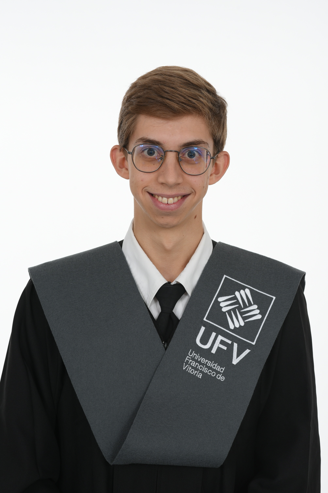
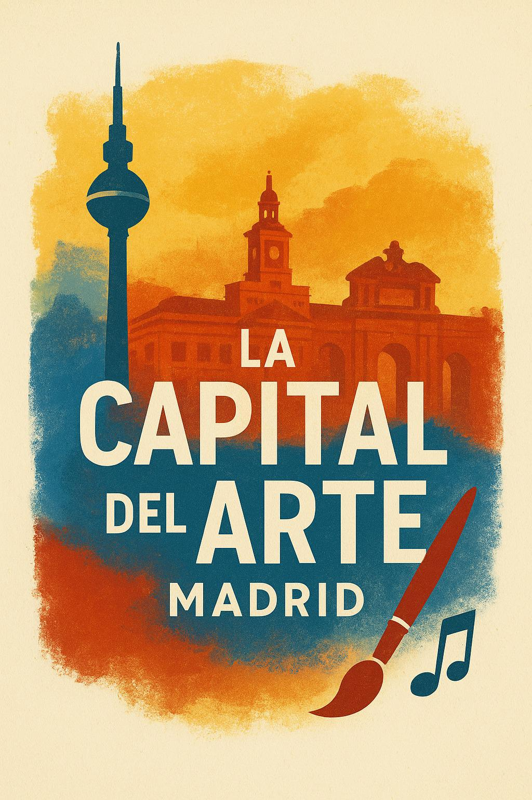

Regnum Christi Institucional
Grabación, edición y producción
Portfolio Audiovisual
Periodista · Comunicador Audiovisual · Editor
Producción audiovisual integral para organizaciones de primer nivel: desde la grabación y edición multicámara en Premiere Pro hasta la locución profesional y la optimización de contenidos transmedia para YouTube e Instagram.

Portfolio
Cada pieza está categorizada según mi rol en la producción.


Proyecto Estrella
Proyecto transmedia del que soy cámara y montador principal.

Transmedia · 2025–2026Un ecosistema de contenido multiplataforma sobre el mundo del arte difundido en YouTube, Spotify, Instagram y TikTok. He liderado la producción técnica integral: operador de cámara, montaje de vídeo y podcast, y adaptación nativa de formatos para cada plataforma.